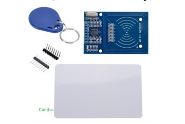
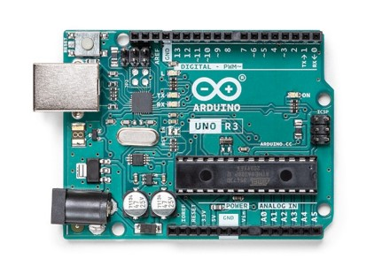
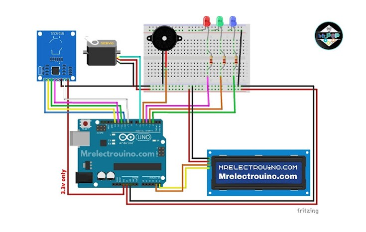
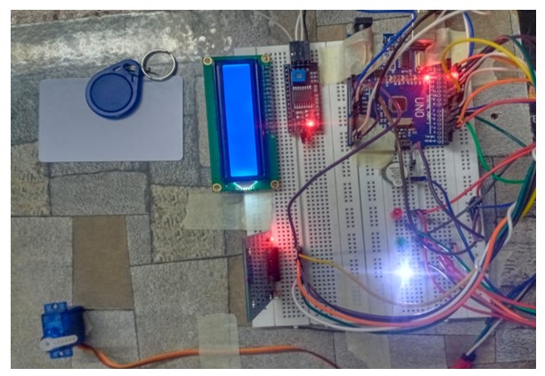

RFID Based Security System
A keyless entry prototype that authenticates users with an RFID card/tag and actuates a servo-driven door lock. The system displays status on a 16×2 LCD (I²C), uses clear visual/audio feedback (LEDs & buzzer), and demonstrates a practical access-control workflow for homes, labs, or offices. (Summarized from the Communication Systems CEP report.) :contentReference[oaicite:1]{index=1}
Team & Context
Course: Communication Systems (CEP) — Fall 2022 • Instructor: Dr. Waqas Ahmed • Lab Engineer: Ma’am Anzalna Nurejo • Group 01. Team members: Muhammad Sheraz (Electronics), Muhammad Huzaifa Zahid (Electronics), Muhammad Talha (Power). :contentReference[oaicite:2]{index=2}
Objective
Design and study a door-lock mechanism using RFID read/write with a microcontroller that decides access and operates the lock motor. :contentReference[oaicite:3]{index=3}
System Overview
- Reader: MFRC522 (ISO/IEC 14443 A/MIFARE/NTAG compatible) with ~0–30 mm read range. :contentReference[oaicite:4]{index=4}
- Controller: Arduino UNO (ATmega328P), SPI to MFRC522; I²C to LCD. :contentReference[oaicite:5]{index=5}
- UI/Feedback: 16×2 I²C LCD; Green/Red/Blue LEDs; 5 V piezo buzzer. :contentReference[oaicite:6]{index=6}
- Actuator: Servo motor that rotates the latch (demo door lock). :contentReference[oaicite:7]{index=7}


Working Principle
- When a tag enters range, MFRC522 sends UID to Arduino via SPI.
- Arduino compares the UID against an authorized master UID.
- On match: LCD shows Access Granted, Green LED blinks, buzzer beeps, servo rotates to open lock.
- On mismatch: LCD shows Access Denied, Red LED blinks, buzzer sounds, lock remains closed. :contentReference[oaicite:10]{index=10}
Wiring Summary
- MFRC522 ↔ UNO: SPI (SS=D10, RST=D9, SCK=D13, MOSI=D11, MISO=D12).
- LCD (I²C): VCC, GND, SDA → A4, SCL → A5 (UNO).
- Servo: Signal → D6; LEDs: D2/D3/D4; Buzzer: D5. :contentReference[oaicite:11]{index=11}
Arduino Code
#include <SPI.h>
#include <MFRC522.h>
#include <LiquidCrystal_I2C.h>
#include <Servo.h>
#define RST_PIN 9
#define SS_PIN 10
MFRC522 mfrc522(SS_PIN, RST_PIN);
String MasterTag = "A4 15 D0 28"; // Authorized UID (from initial scan)
String UIDCard = "";
LiquidCrystal_I2C lcd(0x27, 16, 2);
Servo servo;
#define BlueLED 2
#define GreenLED 3
#define RedLED 4
#define Buzzer 5
void setup() {
Serial.begin(9600);
SPI.begin();
mfrc522.PCD_Init();
lcd.init();
lcd.backlight();
lcd.clear();
servo.attach(6);
servo.write(10);
pinMode(GreenLED, OUTPUT);
pinMode(BlueLED, OUTPUT);
pinMode(RedLED, OUTPUT);
pinMode(Buzzer, OUTPUT);
digitalWrite(BlueLED, HIGH);
lcd.clear();
lcd.print(" Access Control ");
lcd.setCursor(0, 1);
lcd.print("Scan Your Card>>");
}
void loop() {
digitalWrite(BlueLED, HIGH);
digitalWrite(RedLED, LOW);
digitalWrite(GreenLED, LOW);
noTone(Buzzer);
servo.write(10);
while (getUID()) {
Serial.print("UID: ");
Serial.println(UIDCard);
lcd.clear();
lcd.setCursor(2, 0);
lcd.print("Permission");
lcd.setCursor(0, 1);
if (UIDCard == MasterTag) {
lcd.print(" Access Granted!");
digitalWrite(GreenLED, HIGH);
digitalWrite(BlueLED, LOW);
digitalWrite(RedLED, LOW);
servo.write(100);
delay(50);
for (int i = 0; i < 2; i++) {
tone(Buzzer, 2000); delay(250);
noTone(Buzzer); delay(250);
}
} else {
lcd.print(" Access Denied!");
digitalWrite(BlueLED, LOW);
digitalWrite(GreenLED, LOW);
tone(Buzzer, 2000);
servo.write(10);
for (int i = 0; i < 10; i++) {
digitalWrite(RedLED, HIGH); delay(250);
digitalWrite(RedLED, LOW); delay(250);
}
noTone(Buzzer);
}
delay(2000);
lcd.clear();
lcd.print(" Access Control ");
lcd.setCursor(0, 1);
lcd.print("Scan Your Card>>");
}
}
boolean getUID() {
if (!mfrc522.PICC_IsNewCardPresent()) return false;
if (!mfrc522.PICC_ReadCardSerial()) return false;
UIDCard = "";
for (byte i = 0; i < mfrc522.uid.size; i++) {
UIDCard.concat(String(mfrc522.uid.uidByte[i] < 0x10 ? " 0" : " "));
UIDCard.concat(String(mfrc522.uid.uidByte[i], HEX));
}
UIDCard.toUpperCase();
UIDCard = UIDCard.substring(1);
mfrc522.PICC_HaltA();
return true;
}
Full sketch reproduced from the report’s “Arduino Code” section. :contentReference[oaicite:12]{index=12}
Schematic & Hardware


Results & Discussion
- Valid card → servo unlocks; invalid card → buzzer/Red LED alert; relay output optional for EM locks.
- Demonstrates reliable, low-cost, keyless entry—extendable to attendance or parking gates. :contentReference[oaicite:16]{index=16}
Conclusion
The build solidified understanding of RFID (AIDC) and practical access control. The same design pattern adapts easily to attendance systems, parking control, and ticketing with minimal changes. :contentReference[oaicite:17]{index=17}
References
- MFRC522 Datasheet and application notes (ISO/IEC 14443 A/MIFARE/NTAG).
- Arduino UNO board reference & libraries (SPI, Servo, LiquidCrystal_I2C). :contentReference[oaicite:18]{index=18}